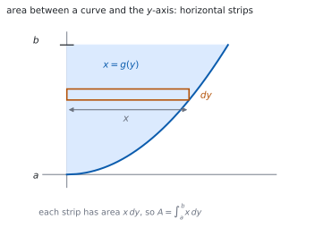
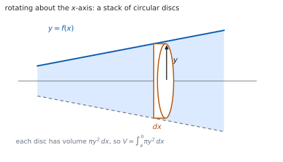

HL 5.17 — Areas with respect to the \(y\)-axis and volumes of revolution（\(y\) 軸とのあいだの面積と回転体の体積）
- 曲線と \(y\) 軸とのあいだの面積を、\(\displaystyle\int x\,\mathrm{d}y\) で求められる。
- \(y = f(x)\) を \(x = g(y)\) の形に直せる。
- \(x\) 軸まわりの回転体の体積を求められる。
- \(y\) 軸まわりの回転体の体積を求められる。
- 上端・下端を、どちらの軸で積分するかに合わせて決められる。
- \(2\) 曲線にはさまれた部分を回した体積を、差として求められる。
The idea
1. Area between a curve and the \(y\)-axis（\(y\) 軸とのあいだの面積）
シラバスは、こう書いています。
Area of the region enclosed by a curve and the y-axis in a given interval.
公式集の 5.17 の欄にあります。
Area of region enclosed by a curve and y-axis
\[ A = \int_{a}^{b} x\,\mathrm{d}y \tag{1}\]

\(x\) 軸とのあいだならたて長の短冊でした（SL 5.11）。\(y\) 軸とのあいだならよこ長です。
上端・下端は \(y\) の値です。\(x\) の値ではありません。
2. Making \(x\) the subject（\(x\) を \(y\) で表す）
式 1 を使うには、\(x\) を \(y\) の式で書く必要があります。
\[ y = x^{2} \ (x \geq 0) \quad \Longrightarrow \quad x = \sqrt{y} \]
符号に気をつけてください。 \(y = x^{2}\) を解くと \(x = \pm\sqrt{y}\) です。問題の図から、どちらを使うかを決めます。
\(y = e^{x}\) なら \(x = \ln y\)、\(y = x^{3}\) なら \(x = y^{1/3}\) です。
3. Volume of revolution about the \(x\)-axis（\(x\) 軸まわりの回転体）
Volumes of revolution about the x-axis or y-axis.
公式集の 5.17 には、こうあります。
Volume of revolution about the x or y-axes
\[ V = \int_{a}^{b} \pi y^{2}\,\mathrm{d}x \tag{2}\]

\(\pi y^{2}\) は円の面積です（第 1 節）。半径が \(y\) の円板を、厚さ \(\mathrm{d}x\) で積み上げています。
\(y\) を \(2\) 乗するのを忘れないこと。 これが、この項目でいちばん多いまちがいです。
4. Volume of revolution about the \(y\)-axis（\(y\) 軸まわりの回転体）
\[ V = \int_{a}^{b} \pi x^{2}\,\mathrm{d}y \tag{3}\]
\(x\) と \(y\) を入れかえただけです。今度は \(x\) を \(y\) で表してから積分します。
回す軸が \(y\) 軸なら、円板の半径は軸からの水平距離、つまり \(x\) です。
5. Choosing the limits（上端・下端の決め方）
\(\mathrm{d}x\) で積分するなら \(x\) の値、\(\mathrm{d}y\) で積分するなら \(y\) の値です。
\(y = x^{2}\) を \(y\) 軸まわりに、\(0 \leq x \leq 2\) の部分で回すなら、上端・下端は \(y\) の値 \(0\) と \(4\) です。\(x\) の値 \(0\) と \(2\) ではありません。
\(x\) の範囲が与えられたら、\(y\) の範囲に直してから書いてください。
6. Rotating the region between two curves（\(2\) 曲線のあいだを回す）
\(2\) 曲線にはさまれた部分を回すと、中が空いた立体になります。
体積は、外側の立体から内側の立体を引いた差です。
\[ V = \int_{a}^{b} \pi\left(y_{\text{outer}}^{2}-y_{\text{inner}}^{2}\right)\mathrm{d}x \tag{4}\]
\(\left(y_{\text{outer}}-y_{\text{inner}}\right)^{2}\) ではありません。 \(2\) 乗してから引きます（第 3 節）。
7. Checking with a known solid（知っている立体で検算）
答えが出たら、知っている立体の公式とくらべると安心です。
- \(y = mx\) を \(x\) 軸まわりに \(0\) から \(h\) まで回すと円錐。\(V = \dfrac{1}{3}\pi r^{2}h\) です。
- 半円 \(y = \sqrt{r^{2}-x^{2}}\) を回すと球。\(V = \dfrac{4}{3}\pi r^{3}\) です。
答えに \(\pi\) が付いているかも、手軽な見張りです。回転体の体積には、かならず \(\pi\) が出ます。
TI-Nspire CX II の積分テンプレートに、\(\pi y^{2}\) をそのまま入れられます。\(\pi\) は ctrl + π です。
グラフで交点を先に読んでから、上端・下端に使うと速いです。menu → 6: Analyze Graph → 4: Intersection です。
答案には、式を書いてください。 式 2 の形と、\(y\) を \(x\) で表した式を見せます。
Paper 1 では使えません。 このページの例題と演習は、すべて手で解けるようにしてあります。
Why it works
なぜ、円板を積むのか
回転体を、軸に垂直な平面で薄く切ります。切り口は円です。
\(x\) のところの切り口の半径は \(y = f(x)\) なので、面積は \(\pi y^{2}\) です。厚さを \(\mathrm{d}x\) とすると、その薄い円板の体積は
\[ \pi y^{2}\,\mathrm{d}x \]
です。これを \(a\) から \(b\) まで足し合わせたものが 式 2 です。
「切り口の面積 \(\times\) 厚さ」を積む、という考え方は、面積のときの「高さ \(\times\) 幅」と同じです。
なぜ、\(y\) 軸のときは \(x\,\mathrm{d}y\) なのか
\(x\) 軸とのあいだの面積では、たて長の短冊の高さが \(y\)、幅が \(\mathrm{d}x\) でした。
\(y\) 軸とのあいだでは、横だおしに考えます。よこ長の短冊の長さが \(x\)、厚さが \(\mathrm{d}y\) です（図 1）。
\(x\) と \(y\) の役割を入れかえただけで、式の形は同じです。軸を \(90^\circ\) 回して見れば、同じ絵になります。
なぜ、差の \(2\) 乗ではなく \(2\) 乗の差なのか
中が空いた輪（ドーナツの切り口）の面積は
\[ \pi R^{2}-\pi r^{2} = \pi\left(R^{2}-r^{2}\right) \]
です。大きい円から小さい円を引きます。
\(\pi(R-r)^{2}\) は「半径 \(R-r\) の円」の面積で、まったく別のものです。\(R = 2\)、\(r = 1\) で試すと、\(\pi(4-1) = 3\pi\) に対して \(\pi(2-1)^{2} = \pi\) です。\(3\) 倍ちがいます。
なぜ、円錐や球の公式が出てくるのか
\(y = \dfrac{r}{h}x\) を \(0\) から \(h\) まで \(x\) 軸まわりに回すと
\[ V = \int_{0}^{h}\pi\frac{r^{2}}{h^{2}}x^{2}\,\mathrm{d}x = \pi\frac{r^{2}}{h^{2}}\cdot\frac{h^{3}}{3} = \frac{1}{3}\pi r^{2}h \]
です。円錐の公式が、計算から出てきます。
球も同じで、\(y = \sqrt{r^{2}-x^{2}}\) を \(-r\) から \(r\) まで回すと \(\dfrac{4}{3}\pi r^{3}\) になります。小学校で習った公式が、ここで証明できるわけです。
Worked examples
問題文は英語です。意味が理解できなかったら、問題文の下の「日本語訳」を開いてください。解説は日本語です。
例題も演習も、すべて電卓なしで解けます。 Paper 1 のつもりで解いてください。
例題 1 The curve \(y = x^{2}\) for \(x \geq 0\) is drawn. Find the area of the region enclosed by the curve, the \(y\)-axis and the line \(y = 4\).
日本語訳
\(x \geq 0\) における曲線 \(y = x^{2}\) について、曲線・\(y\) 軸・直線 \(y = 4\) で囲まれた部分の面積を求めなさい。
\(x\) を \(y\) で表します（第 2 節）。\(x \geq 0\) なので \(x = \sqrt{y}\) です。
\(y\) の範囲は \(0\) から \(4\) です。式 1 に入れます。
\[ A = \int_{0}^{4} \sqrt{y}\,\mathrm{d}y = \left[\frac{2}{3}y^{3/2}\right]_{0}^{4} = \frac{2}{3}(8) = \frac{16}{3} \]
検算。 長方形とくらべます。 全体の長方形は \(2 \times 4 = 8\) で、答えはその \(\dfrac{2}{3}\) ✓ 図と合います。
検算（\(x\) 軸側で）。 \(x\) 軸とのあいだの面積は \(\displaystyle\int_{0}^{2}x^{2}\mathrm{d}x = \dfrac{8}{3}\)。足すと \(8\) ✓ \(2\) つで長方形になります。
Since \(x \geq 0\), \(\ x = \sqrt{y}\).
\[A = \int_{0}^{4} \sqrt{y}\,\mathrm{d}y = \left[\frac{2}{3}y^{3/2}\right]_{0}^{4} = \frac{16}{3}\]
例題 2 The region under \(y = x^{2}\) from \(x = 0\) to \(x = 2\) is rotated through \(2\pi\) about the \(x\)-axis. Find the volume of the solid formed.
日本語訳
\(x = 0\) から \(x = 2\) までの \(y = x^{2}\) の下の部分を、\(x\) 軸のまわりに \(1\) 回転させます。できる立体の体積を求めなさい。
式 2 に入れます。\(y\) を \(2\) 乗します。
\[ V = \int_{0}^{2} \pi\left(x^{2}\right)^{2}\mathrm{d}x = \pi\int_{0}^{2} x^{4}\,\mathrm{d}x = \pi\left[\frac{x^{5}}{5}\right]_{0}^{2} = \frac{32\pi}{5} \]
検算（\(\pi\)）。 答えに \(\pi\) が付いています ✓ 回転体なので当てはまります。
検算（大きさ）。 半径 \(4\)、高さ \(2\) の円柱なら \(32\pi\)。答えは \(\dfrac{32\pi}{5}\) で、その \(\dfrac{1}{5}\) ✓ 立体は円柱よりずっと細いので自然です。
\[V = \int_{0}^{2} \pi\left(x^{2}\right)^{2}\mathrm{d}x = \pi\left[\frac{x^{5}}{5}\right]_{0}^{2} = \frac{32\pi}{5}\]
例題 3 The region between \(y = x^{2}\), the \(y\)-axis and \(y = 4\), with \(x \geq 0\), is rotated through \(2\pi\) about the \(y\)-axis. Find the volume of the solid formed.
日本語訳
\(x \geq 0\) で、\(y = x^{2}\)・\(y\) 軸・\(y = 4\) で囲まれた部分を、\(y\) 軸のまわりに \(1\) 回転させます。できる立体の体積を求めなさい。
\(y\) 軸まわりなので 式 3 です。\(x^{2}\) を \(y\) で表します。
\[ y = x^{2} \quad \Longrightarrow \quad x^{2} = y \]
\(2\) 乗がそのまま \(y\) になるので、計算が楽です。
\[ V = \int_{0}^{4} \pi y\,\mathrm{d}y = \pi\left[\frac{y^{2}}{2}\right]_{0}^{4} = 8\pi \]
検算（上端・下端）。 \(y\) で積分しているので \(0\) から \(4\) ✓ \(x\) の \(0\) から \(2\) ではありません（第 5 節）。
検算（大きさ）。 半径 \(2\)、高さ \(4\) の円柱なら \(16\pi\)。答えはその半分 ✓ 立体は円柱の内側にあります。
\[y = x^{2} \ \Rightarrow \ x^{2} = y\]
\[V = \int_{0}^{4} \pi y\,\mathrm{d}y = \pi\left[\frac{y^{2}}{2}\right]_{0}^{4} = 8\pi\]
例題 4 The region enclosed by \(y = x\) and \(y = x^{2}\) between \(x = 0\) and \(x = 1\) is rotated through \(2\pi\) about the \(x\)-axis. Find the volume of the solid formed.
日本語訳
\(x = 0\) から \(x = 1\) のあいだで \(y = x\) と \(y = x^{2}\) に囲まれた部分を、\(x\) 軸のまわりに \(1\) 回転させます。できる立体の体積を求めなさい。
\(0 < x < 1\) では \(x > x^{2}\) なので、外側が \(y = x\)、内側が \(y = x^{2}\) です。
式 4 に入れます。\(2\) 乗してから引きます。
\[ V = \int_{0}^{1} \pi\left(x^{2}-\left(x^{2}\right)^{2}\right)\mathrm{d}x = \pi\int_{0}^{1}\left(x^{2}-x^{4}\right)\mathrm{d}x \]
\[ = \pi\left[\frac{x^{3}}{3}-\frac{x^{5}}{5}\right]_{0}^{1} = \pi\left(\frac{1}{3}-\frac{1}{5}\right) = \frac{2\pi}{15} \]
検算（どちらが外か）。 \(x = 0.5\) で \(y = 0.5\) と \(y = 0.25\) ✓ \(y = x\) のほうが外側です。
検算（大きさ）。 外側だけの体積は \(\dfrac{\pi}{3}\)、内側だけは \(\dfrac{\pi}{5}\)。差は \(\dfrac{2\pi}{15}\) ✓ 合っています。
For \(0 < x < 1\), \(\ x > x^{2}\), so \(y = x\) is the outer curve.
\[V = \int_{0}^{1} \pi\left(x^{2}-x^{4}\right)\mathrm{d}x = \pi\left[\frac{x^{3}}{3}-\frac{x^{5}}{5}\right]_{0}^{1} = \frac{2\pi}{15}\]
試験ではこう書く
The two curves meet where \(x = x^{2}\), that is at \(x = 0\) and \(x = 1\), which are the limits given. Between these values, testing \(x = \dfrac{1}{2}\) gives \(y = \dfrac{1}{2}\) for the line and \(y = \dfrac{1}{4}\) for the parabola, so the line lies above the parabola and is the outer boundary of the region.
When the region is rotated about the \(x\)-axis, each cross-section perpendicular to the axis is an annulus with outer radius \(x\) and inner radius \(x^{2}\). Its area is \(\pi x^{2}-\pi\left(x^{2}\right)^{2}\), the difference of the two circular areas, not the square of the difference of the radii.
Hence
\[V = \int_{0}^{1} \pi\left(x^{2}-x^{4}\right)\mathrm{d}x = \pi\left[\frac{x^{3}}{3}-\frac{x^{5}}{5}\right]_{0}^{1} = \pi\left(\frac{1}{3}-\frac{1}{5}\right) = \frac{2\pi}{15}\]
As a check, the solid obtained from the line alone is a cone of radius \(1\) and height \(1\), with volume \(\dfrac{\pi}{3}\), and the solid from the parabola alone has volume \(\dfrac{\pi}{5}\). The difference is \(\dfrac{2\pi}{15}\), as found.
Common errors
回転体の体積には、かならず \(\pi\) が付きます（第 7 節）。
答えに \(\pi\) がなかったら、そこで気づけます。最後に見直してください。
\(\mathrm{d}y\) で積分するなら \(y\) の値です（第 5 節）。
\(x\) の範囲しか与えられていなければ、\(y\) の範囲に直してから書きます。
\(y\) 軸まわりなら \(\displaystyle\int \pi x^{2}\mathrm{d}y\) です（式 3）。
\(x\) を \(y\) で表すところから始めます。\(y = f(x)\) のままでは進めません。
\(\pi\left(y_{\text{outer}}^{2}-y_{\text{inner}}^{2}\right)\) であって \(\pi\left(y_{\text{outer}}-y_{\text{inner}}\right)^{2}\) ではありません（第 3 節）。
\(2\) 乗してから引く、と覚えてください。
\(2\) 曲線のあいだでは、区間の中の値を \(1\) つ入れて上下を確かめます。
取りちがえると、体積が負になります。負が出たら、まずここです。
Exercises
各問題に、折りたたみが \(3\) つ付いています。日本語訳、解答例（答案用紙に書くべきこと。英語です）、解説（なぜそうなるか。日本語です）。
まず自分で解いて、次に解答例と見くらべてください。解説は、合わなかったときだけ開けば十分です。
1 Find the area of the region enclosed by the curve \(x = y^{2}\), the \(y\)-axis and the lines \(y = 0\) and \(y = 2\).
日本語訳
曲線 \(x = y^{2}\)、\(y\) 軸、および直線 \(y = 0\)、\(y = 2\) で囲まれた部分の面積を求めなさい。
\[A = \int_{0}^{2} y^{2}\,\mathrm{d}y = \left[\frac{y^{3}}{3}\right]_{0}^{2} = \frac{8}{3}\]
すでに \(x\) が \(y\) で表されています。 そのまま 式 1 に入れるだけです。
検算（長方形）。 \(4 \times 2 = 8\) の \(\dfrac{1}{3}\) ✓ 放物線の下の面積らしい値です。
検算（単位）。 面積なので \(\pi\) は出ません ✓
2 Find the area of the region enclosed by the curve \(y = e^{x}\), the \(y\)-axis and the lines \(y = 1\) and \(y = e\).
日本語訳
曲線 \(y = e^{x}\)、\(y\) 軸、および直線 \(y = 1\)、\(y = e\) で囲まれた部分の面積を求めなさい。
\[x = \ln y\]
\[A = \int_{1}^{e} \ln y\,\mathrm{d}y = \left[y\ln y-y\right]_{1}^{e} = (e-e)-(0-1) = 1\]
\(\ln y\) の積分は部分積分です（HL 5.16）。
上端・下端は \(y\) の値です。\(1\) と \(e\) を使います。
検算（長方形）。 \(1 \times (e-1) \approx 1.72\) より小さい ✓
検算（\(x\) 軸側）。 \(\displaystyle\int_{0}^{1}e^{x}\mathrm{d}x = e-1 \approx 1.72\)。\(2\) つを足すと \(e \approx 2.72\) ✓ 長方形 \(1 \times e\) になります。
3 The region under \(y = \sqrt{x}\) from \(x = 0\) to \(x = 4\) is rotated through \(2\pi\) about the \(x\)-axis. Find the volume.
日本語訳
\(x = 0\) から \(x = 4\) までの \(y = \sqrt{x}\) の下の部分を、\(x\) 軸のまわりに \(1\) 回転させます。体積を求めなさい。
\[V = \int_{0}^{4} \pi\left(\sqrt{x}\right)^{2}\mathrm{d}x = \pi\int_{0}^{4} x\,\mathrm{d}x = \pi\left[\frac{x^{2}}{2}\right]_{0}^{4} = 8\pi\]
\(\left(\sqrt{x}\right)^{2} = x\) なので、積分が楽になります。\(2\) 乗して形が簡単になる例です。
検算（円柱）。 半径 \(2\)、高さ \(4\) の円柱は \(16\pi\)。答えはその半分 ✓
検算（\(\pi\)）。 付いています ✓
4 The region under \(y = 2x\) from \(x = 0\) to \(x = 3\) is rotated through \(2\pi\) about the \(x\)-axis. Find the volume, and check your answer using the formula for the volume of a cone.
日本語訳
\(x = 0\) から \(x = 3\) までの \(y = 2x\) の下の部分を、\(x\) 軸のまわりに \(1\) 回転させます。体積を求め、円錐の体積の公式で検算しなさい。
\[V = \int_{0}^{3} \pi(2x)^{2}\mathrm{d}x = 4\pi\left[\frac{x^{3}}{3}\right]_{0}^{3} = 36\pi\]
The solid is a cone of radius \(6\) and height \(3\), and \(\dfrac{1}{3}\pi(6)^{2}(3) = 36\pi\).
\(x = 3\) のとき \(y = 6\) なので、底面の半径は \(6\)、高さは \(3\) です（第 7 節）。
直線を回すと円錐になります。公式と合うことを確かめると安心です。
検算。 \(\dfrac{1}{3}\pi(36)(3) = 36\pi\) ✓
検算（\(2\) 乗）。 \((2x)^{2} = 4x^{2}\) ✓ \(2\) も \(2\) 乗します。
5 The region between \(y = x^{3}\), the \(y\)-axis and \(y = 8\), with \(x \geq 0\), is rotated through \(2\pi\) about the \(y\)-axis. Find the volume.
日本語訳
\(x \geq 0\) で、\(y = x^{3}\)・\(y\) 軸・\(y = 8\) で囲まれた部分を、\(y\) 軸のまわりに \(1\) 回転させます。体積を求めなさい。
\[y = x^{3} \ \Rightarrow \ x = y^{1/3}, \qquad x^{2} = y^{2/3}\]
\[V = \int_{0}^{8} \pi y^{2/3}\,\mathrm{d}y = \pi\left[\frac{3}{5}y^{5/3}\right]_{0}^{8} = \pi\cdot\frac{3}{5}(32) = \frac{96\pi}{5}\]
\(y\) 軸まわりなので、\(x^{2}\) を \(y\) で表します（式 3）。
\(8^{5/3} = \left(8^{1/3}\right)^{5} = 2^{5} = 32\) です。
検算（上端・下端）。 \(y\) の値 \(0\) と \(8\) ✓ \(x\) の \(0\) と \(2\) ではありません。
検算（円柱）。 半径 \(2\)、高さ \(8\) の円柱は \(32\pi\)。答え \(\dfrac{96\pi}{5} = 19.2\pi\) はその内側 ✓
6 The region under \(y = \sin x\) from \(x = 0\) to \(x = \pi\) is rotated through \(2\pi\) about the \(x\)-axis. Find the volume.
日本語訳
\(x = 0\) から \(x = \pi\) までの \(y = \sin x\) の下の部分を、\(x\) 軸のまわりに \(1\) 回転させます。体積を求めなさい。
\[V = \int_{0}^{\pi} \pi\sin^{2}x\,\mathrm{d}x = \pi\int_{0}^{\pi}\frac{1-\cos 2x}{2}\,\mathrm{d}x\]
\[= \pi\left[\frac{x}{2}-\frac{\sin 2x}{4}\right]_{0}^{\pi} = \pi\cdot\frac{\pi}{2} = \frac{\pi^{2}}{2}\]
\(\sin^{2}x\) はそのままでは積分できません。\(2\) 倍角から \(\sin^{2}x = \dfrac{1-\cos 2x}{2}\) に直します（HL 3.10）。
検算。 \(\sin 2\pi = \sin 0 = 0\) なので、第 \(2\) 項は消えます ✓
検算（平均で）。 \(\sin^{2}x\) の平均は \(\dfrac{1}{2}\) なので、\(\pi\times\dfrac{1}{2}\times\pi = \dfrac{\pi^{2}}{2}\) ✓
7 Find the area of the region enclosed by the curve \(y = x^{2}\) (with \(x \geq 0\)), the \(y\)-axis and the lines \(y = 1\) and \(y = 4\).
日本語訳
\(x \geq 0\) における曲線 \(y = x^{2}\)、\(y\) 軸、および直線 \(y = 1\)、\(y = 4\) で囲まれた部分の面積を求めなさい。
\[A = \int_{1}^{4} \sqrt{y}\,\mathrm{d}y = \left[\frac{2}{3}y^{3/2}\right]_{1}^{4} = \frac{2}{3}(8)-\frac{2}{3}(1) = \frac{14}{3}\]
下端が \(0\) ではなく \(1\) です。\(y = 1\) から始めます。
検算（引き算で）。 \(0\) から \(4\) までが \(\dfrac{16}{3}\)、\(0\) から \(1\) までが \(\dfrac{2}{3}\)。差は \(\dfrac{14}{3}\) ✓
検算（長方形）。 \(2 \times 3 = 6\) より小さい ✓
8 The region enclosed by \(y = 4-x^{2}\) and the \(x\)-axis, with \(x \geq 0\), is rotated through \(2\pi\) about the \(y\)-axis. Find the volume.
日本語訳
\(x \geq 0\) で、\(y = 4-x^{2}\) と \(x\) 軸で囲まれた部分を、\(y\) 軸のまわりに \(1\) 回転させます。体積を求めなさい。
\[y = 4-x^{2} \ \Rightarrow \ x^{2} = 4-y\]
The region runs from \(y = 0\) to \(y = 4\).
\[V = \int_{0}^{4} \pi(4-y)\,\mathrm{d}y = \pi\left[4y-\frac{y^{2}}{2}\right]_{0}^{4} = \pi(16-8) = 8\pi\]
\(y\) 軸まわりなので、\(x^{2}\) を \(y\) で表します（式 3）。\(x^{2} = 4-y\) と、\(2\) 乗のまま出るので楽です。
\(y\) の範囲は、\(x = 0\) のとき \(y = 4\)、\(x = 2\) のとき \(y = 0\) から決まります。
検算（円柱）。 半径 \(2\)、高さ \(4\) の円柱は \(16\pi\)。答えはその半分 ✓
検算（放物線）。 放物線を回した立体は、円柱のちょうど半分になります ✓
試験ではこう書く
The solid is generated by rotating about the \(y\)-axis, so the disc at height \(y\) has radius equal to the horizontal distance from the axis, which is \(x\). The formula required is therefore \(V = \displaystyle\int_{a}^{b}\pi x^{2}\,\mathrm{d}y\), and \(x^{2}\) must be expressed in terms of \(y\).
From \(y = 4-x^{2}\) it follows directly that \(x^{2} = 4-y\). No square root is needed, which is convenient: the formula asks for \(x^{2}\), not \(x\).
The limits are values of \(y\). The region meets the \(y\)-axis at \(x = 0\), where \(y = 4\), and meets the \(x\)-axis at \(y = 0\), where \(x = 2\). So \(y\) runs from \(0\) to \(4\).
\[V = \int_{0}^{4} \pi(4-y)\,\mathrm{d}y = \pi\left[4y-\frac{y^{2}}{2}\right]_{0}^{4} = \pi\left(16-8\right) = 8\pi\]
As a check, the solid fits inside a cylinder of radius \(2\) and height \(4\), whose volume is \(16\pi\), and the answer is exactly half of that, which is the known result for a paraboloid.
9 Explain why the volume of a solid of revolution about the \(x\)-axis is \(\displaystyle\int_{a}^{b}\pi y^{2}\,\mathrm{d}x\) rather than \(\displaystyle\int_{a}^{b}\pi y\,\mathrm{d}x\).
日本語訳
\(x\) 軸まわりの回転体の体積が \(\displaystyle\int_{a}^{b}\pi y\,\mathrm{d}x\) ではなく \(\displaystyle\int_{a}^{b}\pi y^{2}\,\mathrm{d}x\) である理由を説明しなさい。
Cutting the solid perpendicular to the axis gives a circular cross-section of radius \(y\), whose area is \(\pi y^{2}\).
A thin slice of thickness \(\mathrm{d}x\) therefore has volume \(\pi y^{2}\,\mathrm{d}x\), and adding the slices gives the integral.
The expression \(\pi y\) is not an area, so \(\displaystyle\int \pi y\,\mathrm{d}x\) does not measure a volume.
「切り口の面積 \(\times\) 厚さ」を積んでいます（第 1 節）。
円の面積は \(\pi r^{2}\) で、ここでの \(r\) が \(y\) です。\(2\) 乗は、円の面積から来ています。
検算（単位）。 \(y^{2}\mathrm{d}x\) は長さの \(3\) 乗 ✓ 体積の単位です。
検算（\(\pi y\) なら）。 長さの \(2\) 乗にしかなりません ✓ 体積にはなりません。
試験ではこう書く
The integral is built from thin slices of the solid taken perpendicular to the axis of rotation. At the position \(x\), the curve is at height \(y = f(x)\), and rotating that point through a full turn about the \(x\)-axis sweeps out a circle of radius \(y\).
The slice between \(x\) and \(x+\mathrm{d}x\) is therefore approximately a disc with radius \(y\) and thickness \(\mathrm{d}x\). Its volume is the area of the circular face times the thickness, that is
\[\pi y^{2}\,\mathrm{d}x\]
Summing these slices from \(x = a\) to \(x = b\) and letting the thickness tend to zero gives \(\displaystyle\int_{a}^{b}\pi y^{2}\,\mathrm{d}x\).
The alternative \(\pi y\) would be the circumference of the circle, not its area. Multiplying a circumference by a thickness gives a quantity measured in units of length squared, which is an area rather than a volume, so that expression cannot be correct dimensionally.
10 A student finds the volume obtained by rotating the region between \(y = 2\) and \(y = 1\) for \(0 \leq x \leq 3\) about the \(x\)-axis, and writes \(V = \displaystyle\int_{0}^{3}\pi(2-1)^{2}\mathrm{d}x = 3\pi\). Identify the error and give the correct volume.
日本語訳
ある生徒が、\(0 \leq x \leq 3\) で \(y = 2\) と \(y = 1\) にはさまれた部分を \(x\) 軸まわりに回した体積を \(V = \displaystyle\int_{0}^{3}\pi(2-1)^{2}\mathrm{d}x = 3\pi\) と求めました。まちがいを指摘し、正しい体積を書きなさい。
The cross-section is an annulus, whose area is the difference of two circular areas, not the area of a circle of radius \(2-1\).
\[V = \int_{0}^{3} \pi\left(2^{2}-1^{2}\right)\mathrm{d}x = \int_{0}^{3} 3\pi\,\mathrm{d}x = 9\pi\]
\(2\) 乗してから引きます（第 3 節）。生徒の式は、半径 \(1\) の円柱の体積です。
\(\pi\left(4-1\right) = 3\pi\) が切り口の面積、長さ \(3\) をかけて \(9\pi\) です。
検算（外側）。 半径 \(2\) の円柱は \(12\pi\)、半径 \(1\) の円柱は \(3\pi\)。差は \(9\pi\) ✓
検算（生徒の答え）。 \(3\pi\) は内側の円柱の体積と同じ ✓ 偶然ですが、まったく別のものです。
試験ではこう書く
Rotating the region about the \(x\)-axis produces a cylindrical shell: the outer surface comes from \(y = 2\) and the inner surface from \(y = 1\). Each cross-section perpendicular to the axis is an annulus with outer radius \(2\) and inner radius \(1\).
The area of an annulus is the difference of the two circular areas,
\[\pi R^{2}-\pi r^{2} = \pi\left(2^{2}-1^{2}\right) = 3\pi\]
The student has instead used \(\pi(R-r)^{2} = \pi(1)^{2} = \pi\), which is the area of a circle of radius \(1\) — a different region altogether. Squaring and subtracting is not the same as subtracting and squaring.
The correct volume is therefore
\[V = \int_{0}^{3} \pi\left(2^{2}-1^{2}\right)\mathrm{d}x = \int_{0}^{3} 3\pi\,\mathrm{d}x = 9\pi\]
This agrees with the direct calculation: the outer cylinder has volume \(\pi(2)^{2}(3) = 12\pi\) and the inner cylinder has volume \(\pi(1)^{2}(3) = 3\pi\), and \(12\pi-3\pi = 9\pi\).